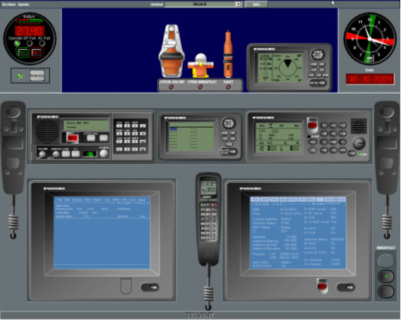

Consola de Alumno
La Consola de Alumno proporciona la información del entorno, y los controles para gobernar todos los equipos de que dispone la unidad. Esta consola se compone de una Pantalla de Presentación Cartográfica y una Pantalla de Control de Equipos.
| Pantalla de Presentación Cartográfica | Pantalla de Control de Equipos |
|  |
Sobre la Pantalla de Presentación Cartográfica se presenta de forma continua la situación de las unidades, sobre una cartografía digital. En la Pantalla de Control de Equipos se presenta de forma permanente los paneles correspondientes a los equipos disponibles en la unidad.
Si el simulador incluye el módulo de navegación, el alumno también puede controlar la navegación de la unidad mediante la Conning Display, a la que se accede desde la opción Ver del menú.
Conning Display

El funcionamiento de la Conning Display se describe detalladamente en el documento Manual de la Conning Display.
La Consola de Alumno puede incorporar equipos de comunicaciones reales (radio VHF, radio MF y receptor Navtex), en este caso, la Pantalla de Control de Equipos se configura para que no muestre los paneles correspondientes a los equipos reales incorporados.